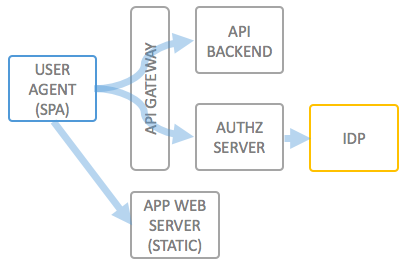
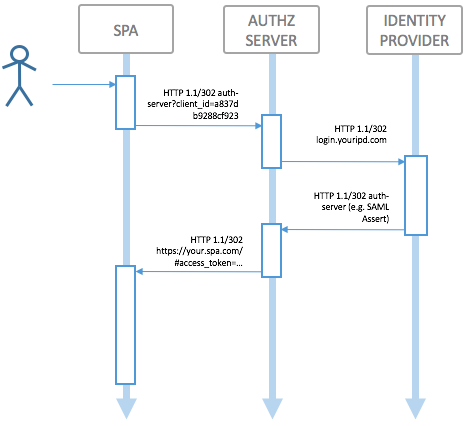

Securing Single Page Apps using the OAuth2 Implicit Grant Flow
Modern Single Page Applications are typically powered by a backend REST API, which needs to be secured against misuse. As the application lives entirely in the browser (user agent) of the end user, and does typically not have a server session, traditional approaches for this (server side sessions) are not desired.
In order to decouple the backend API and frontend application, an API Gateway can be put in place to implement the OAuth 2.0 Implicit Grant Flow, which is the recommended way of solving giving a "public" client (as opposed to a "confidential" client) access to an API.

For development time, the following workflow is typical:
client_id=... and grant_type=implicit in the redirect parametersFor the OAuth2.0 Implicit Flow Grant, it is not necessary and actually "forbidden" to also incorporate the client secret into the single page app; in case the API also supports the client credentials flow, this would enable attackers to reverse engineer the app and extract the credentials. The client ID helps the authorization server to know exactly to which URL it will deliver the access token.
To illustrate the runtime flow of such an authentication and authorization process using the OAuth 2.0 Implicit Flow Grant, see this picture:
Usually, the SPA will try to store an access token inside its local storage; in case there is none to use, or if it has expired, the SPA should redirect to the Authorization Server to get a new token. How the Authorization Server decides whether or not to issue a (new) token to the single page application is an implemnetation detail and inherently part of the business logic of your single page application.
The Authorization normally delegates finding the identity of the end user (authenticate the user) to an external Identity Provider, which can be most anything, e.g. a SAML SSO IdP, Google, Github or any other Provider which allows for integrations.
wicked.haufe.io has everything in the box to implement this type of workflow, using any identity provider you need, including wicked's own username/email and password store. Follow these steps:
Now application developers can sign up for using your API; the portal will help the developer to setup up the application and will also have help pages for the different flows (see Implicit Grant help page, and the Authorization Code Grant help page).
© 2016-2018 Haufe-Lexware GmbH & Co. KG, www.haufe-lexware.com, www.haufe.de, www.lexware.de, www.haufe-akademie.de